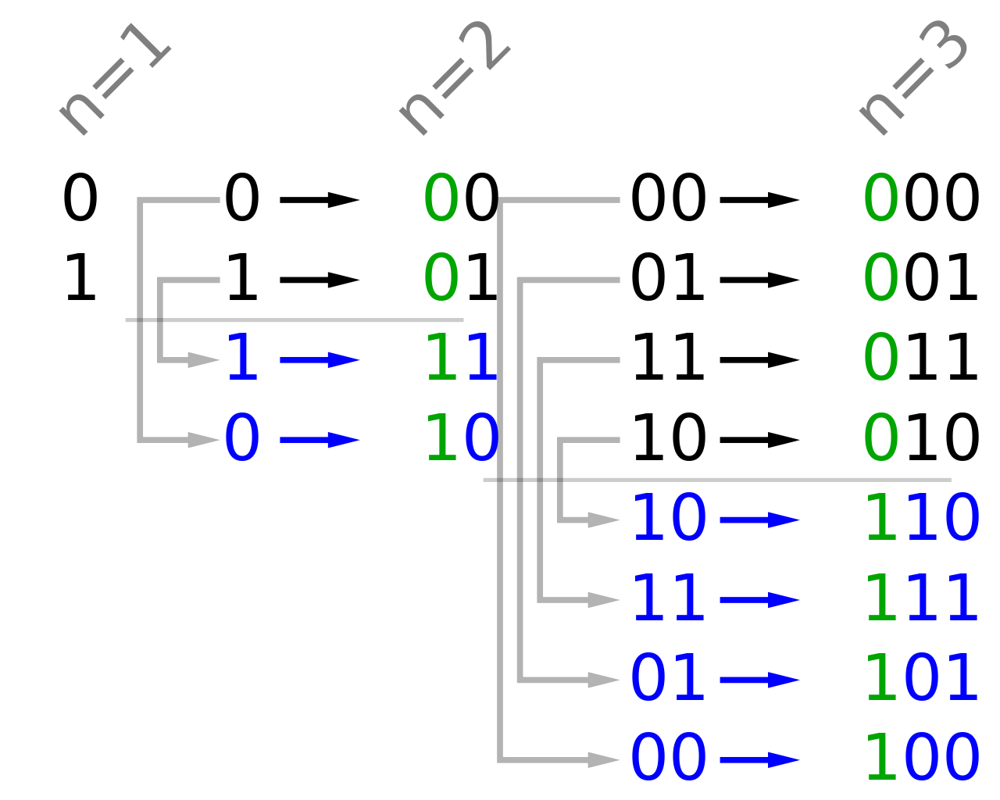

Digital Systems and Information¶
Abstract
- 数字系统：数字信号，典型数字系统。
Digital Systems: Digital signal, typical digital systems - 计算机内信息表示法
Information Representation -
数制
Number systems- 进位计数制的概念和十、二、十六、八制数的表示
Positive radix, positional number systems, decimal, binary, octal and hexadecimal - 不同进位数制之间的转换
Conversion Between Bases
- 进位计数制的概念和十、二、十六、八制数的表示
-
编码的概念及带符号二进制数的编码。
Representation for unsigned and signed binary numbers- 真值、指定长度的机器数：原码、反码、补码。
Magnitude, Signed-Magnitude, Signed-1’s Complement, Signed-2’s Complement - 十进制数的二进制编码：BCD 码
Binary coded decimal (BCD) - 字符编码：ASCII
ASCII Character Codes
- 真值、指定长度的机器数：原码、反码、补码。
-
各种信息的编码
Non-numeric Binary Codes
Digital Systems¶
Types of Digital Systems¶

何为“状态”？
董老师：“对于此前若干周期的输入数据的抽象”
有状态后，系统输出必定与当前状态有关
-
no state present(无状态): Combinational Logic System（组合逻辑系统）：
输入一旦确定，一定有唯一的输出且可预测 / 任意时刻的输出仅取决于该时刻的输入 (output = Function(Input)).
-
state present(存在状态): Sequential System （时序系统）
任意时刻的输出即取决于该时刻的输入，也取决于电路的当前状态
又分两类：
-
synchronous (同步，按特定周期更新):state update at discrete times
-
asynchronous (异步，无特定周期) :state updated at any time
-
-
State = Function(State, Input)
-
Output = Function(State) or Function(State, Input)
state 不能只和 input 有关吗?
—— 不能, 这样 state 的存在就没有必要了(每次的 state 只是作为了 input 到 output 的中间量.)
Example
汽车上的里程表, 输入 count up 和 reset 信号. 如果 count up 就把里程加一. 输出就是可视化的显式里程. 状态就是里程表的值.
这是非同步的, 因为更新信号的时间不依赖统一时钟, 在任意时刻都可以发生.
Embedded Systems(嵌入式系统)¶

analog input(模拟输入):
- A-to-D: 把模拟信号转化为数字信号(处理器不能处理模拟信号)
- D-to-A: 处理后把数字信号转化为模拟信号
- 也有其他的数字输入输出(如按键)
核心: AD & DA, 嵌入式系统区别于日常计算机
A to D
对空调, input 是温度传感器(电阻). 输入是一个电压值, 空调如何理解电压变化?

计算机有以下两个行为:
- 周期性采样: 采样的周期是由输入信号的信号频率决定.(香农定理确定采样频率)
- 量化: 按 \(2^n\) 等分数据，使数据离散化(存在误差),n决定采样精度
D to A
- DA转换
- 滤波
Extra
香农定理：采样频率至少在原信号频率的两倍以上
Information Representation¶
Binary values are represented abstractly by:
- digits 0 and 1
- words (symbols) False (F) and True (T)
- words (symbols) Low (L) and High (H)
- and words On and Off.
Binary values are represented by values or ranges of values of physical quantities
信号的分类:

为什么选择二进制数值表示? ---更好对抗数据传输中的干扰
连续信号在传输过程中难免衰减

噪声容限 0.3V(0.6-0.9 0.1-0.4之间可以继续保留信息的正确性)
Number Systems¶
首先来看进制转换：
计算机中常见进制为 二进制(binary)，八进制(octal)，十进制(decimal)和十六进制(hexadecimal)
通常一个 \(r\) 进制数可以表示如下: \(A_{n-1}A_{n-2}\cdots A_1A_0.A_{-1}A_{-2}\dots A_{-m}\)
其对应的十进制数换算为：
\(Number_r = (\sum\limits_{i=0}^{i=n-1}A_i\times r^i)+(\sum\limits_{j=-m}^{j=-1}A_j\times r^j)\)
整数与小数分开转换
小数转换
十进制转化为\(x\)进制：小数部分乘\(x\)取整，余下小数部分重复此步骤至结束
2转8/16进制: 小数点向两边每次取3/4位，不够则补零
注意
-
十进制小数转换难免除不尽，要根据要求精度保留。
-
补零：
- 整数部分补零在左侧（不补没影响）
- 而小数部分补 0 是在右侧(最后)
\((11 111 101. 010 011 110)_2 \neq (375.233)_8\) 最后要补 0, 应为 \((375.236)_8\)
Info
- \(2^{10} = 1024\) is Kilo, denoted "K".
- \(2^{20}\) is Mega, denoted "M".
- \(2^{30}\) is Giga, denoted "G".
- \(2^{40}\) is Tera, denoted "T".
Binary Arithmetic （二进制运算）¶
二进制加法: 全加器
二进制减法：注意0-1=11；计算机中依靠补码实现
二进制乘法: 根据乘数对应位是 1 还是 0, 如果是 1 就移位并加起来.(和十进制乘法没区别)
Binary Coding(二进制编码)¶
一个数值对应一个符号（例如交通信号灯）
主要有下面几种：
- Numeric
- 必须表达一定范围内的数字；
- 支持简单且普遍的计算；
- 和二进制数本身关联较大
- Non-numeric
- 相对灵活，亦即不需与普遍的运算法则相适配
- 只要编码映射关系唯一就是合法编码
- 与二进制数本身未必有关系
- 相对灵活，亦即不需与普遍的运算法则相适配
给定M个符号，求至少需要的二进制位数n:
\(2^n>=M>2^{n-1}\) so \(n=\lceil{log_2{M}}\rceil\).
"one-hot" code(独热编码):M个符号，M个二进制位,有且仅有一位是1(对应独冷，只有一位是0)
(例如red_001;green_010;yellow_100)
Extra
使用这种编码的好处是，决定或改变状态机目前的状态的成本相对较低，容易设计也容易检测非法行为等。
但是相对应的，缺点是信息表示率较低，非法状态非常多而有效状态很少。
常见对十进制的十个数字进行编码:

Warning
BCD码和进制转换不同
13 = D = 1101(进制转化), 但在编码时会表示成 0001 0011(BCD码), 我们应该分别编码每个数字.
BCD Codes(Binary Code Decimal)¶
有权编码，每个码都有位权
可以计算，但要修正。（超过 9 要加 6）
Example

为什么需要 BCD 编码
电子表中有时针秒, 我们如果用二进制保存时针秒, 那么 加到9以上得到 ABCD..., 当我们想要显示这些值时, 我们要先做进制转换, 再显示(如 A 转为 10) 这其中要做除法, 成本高.
但我们用两位 BCD 码表示, 就可以直接显示结果了.
Excess3(余三码)¶
8421 + 3 得到 Excess3 的值.
编码成对出现, i 和 9 - i 各位互反. 在通信时很有用处.
“3”来自于BCD码中加法修正时的\(\frac{16-10}{2}\),从而很好地解决了BCD加法中的进位问题
ASCII Codes¶
常用的 ASCII Code:
0<-> \(30_{16}\)A<-> \(41_{16}\) to \(5A_{16}\)a<-> \(61_{16}\) to \(7A_{16}\)- Delete (DEL) is all bits set.
Parity Bit Error-Detection Codes(奇偶校验位)¶
信号传输过程中可能由于各种原因出现信号抖动，为保证数据可信度，需要一个错误检测机制。
一种常见方法是 冗余，即加入一些额外的信息用来校验
一种做法是引入 奇偶校验位（Parity Bit）. 它分为：
- 偶校验：A code word has even parity if the number of 1’s in the code word is even.
- 奇校验：A code word has odd parity if the number of 1’s in the code word is odd.
添加一位，表示编码的奇偶性。
对偶校验来说，当1的个数为偶数时校验位为0.(如0101添加一位0成为01010)
对奇校验来说，当1的个数为奇数时校验位为1(如1101添加一位1成为11011)
此时若传输过程中出现问题，1的数量很可能变成奇数，从而得知此信息不对。
Gray Codes¶
%60D)JW974FTHGX.png)
应用: 光学传感器
编码器盘包含不透明区域和透明区域。
Opaque表示0 ,clear表示1。光通过编码器的每一个环，与编码的一个位相对应，照射在传感器上，产生一个0或1

角编码器, 测量转轴转向的角度.
三个传感器不会在同一条直线(安装误差), 存在中间状况.
但格雷编码盘, 相邻编码只差一位, 对结果不会带来影响.
例如二进制编码 011 转换到 100 ，还有可能出现中间状态 000, 001, 010, 110, 101, 111; 但格雷编码只会是011或100。
Extra
格雷码的一种简单粗暴的写法，是通过「镜像」的技巧来倍增已知的格雷编码。
具体来说，如果现在有0 - 3的格雷码，分别是 00，01，11，10，那么我们可以将其增添一位前导 0，然后镜面对称地书写出带有前导 1 的4 - 7的格雷码。
最终我们得到的0 - 7的格雷码是：000，001，011，010，110，111，101，100

Unicode¶
Unicode extends ASCII to 65536(ASCII 最多只有 7 个二进制位, 后扩展为 8 个)
- 2 bytes(16 bits) code words
- 可以用来编码中文/韩文...等字符(ASCII 只能处理英文字母)
创建日期: 2024年3月9日 08:53:42